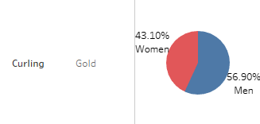
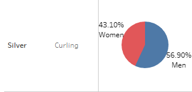
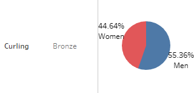
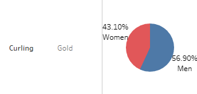
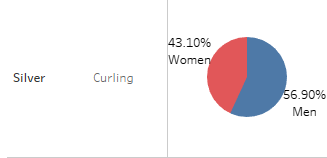
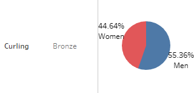
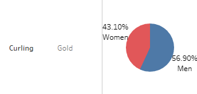
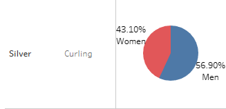
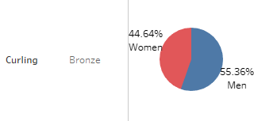

Men Vs Women
Men and Women are both competitors in this sport, but who takes the cake? Does one gender have more of an advantage over the other?
Men have an advantage over women because there are more male competitors
 





We all know that Canada is no stranger to winter sports, however how does fare to other countires in the sport of curling?
Men and Women are both competitors in this sport, but who takes the cake? Does one gender have more of an advantage over the other?
Men have an advantage over women because there are more male competitors



How does canada fare gaiamst itself?